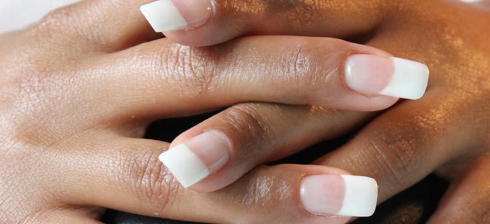
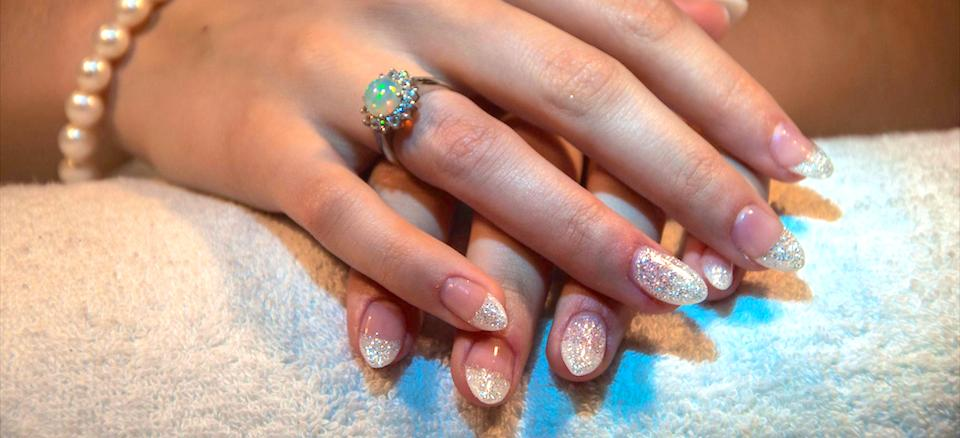
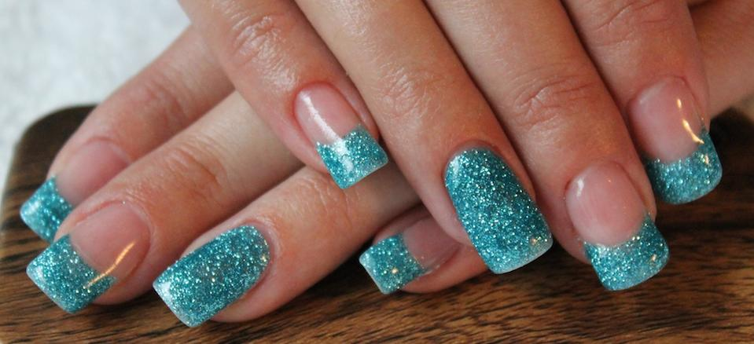
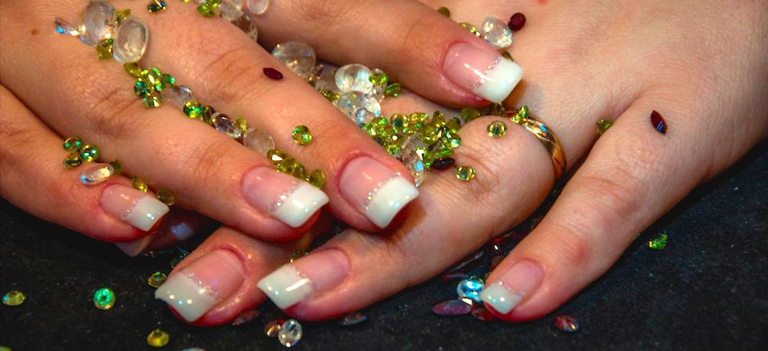
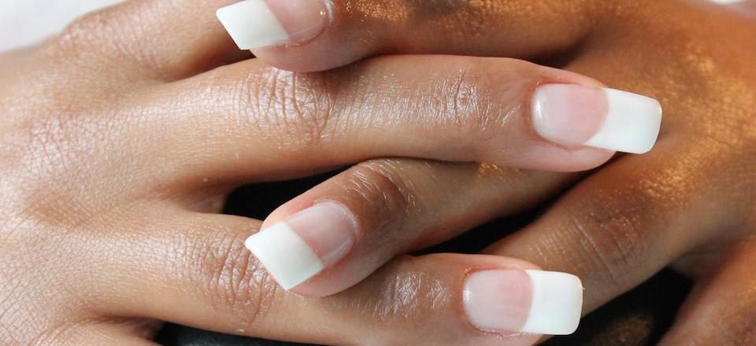
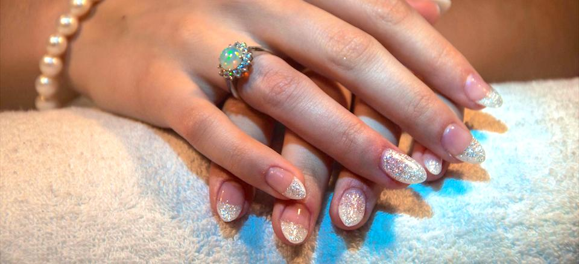
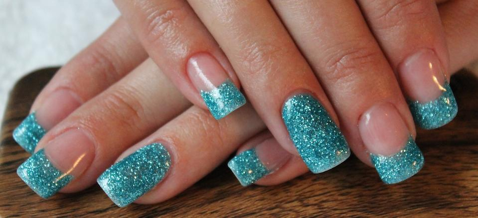
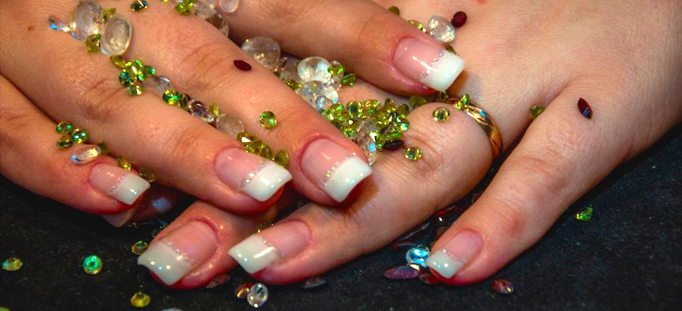

 Behandlingar & priser
Salongen jobbar endast med professionella produkter.
Händer
Spa Manikyr;
- Fin puts av nagelband
- polering av nagelbädd
- peeling, spa bad
- Allt detta avslutas med en skön massage och inoljning av nagelband med valfri nagelolja som finns i salongen
pris 490:-
Mini Manikyr;
- Fin puts av nagelband
- Polerig av nagelbädd
- inoljning av nagelband med valfri nagelolja
Pris 290:-
- Förstärkning av egen nagel från 500:-
- Förlängning på tipp alt. mall från 590:-
- Gel lack inkl. mini manikyr Pris 450:-
- Borttagning av material Pris 390:-
- Påfyllning från 390:-
Hår
Clips på trens
- Poze Premium 125gram ( det är som 125 st keratin slingor
- Längden finns 46 – 50 cm och håret är äkta remi hår
- Väldigt enkelt att behandla och att sätta dit själv.
- Hållbarheten är väldigt bra vid rätt skötsel.
Från 995:- /paket
Clips med effekt färger
- Finns i många olika roliga färger, håret är av syntet
99:- /paketet
Hårförlängning med keratin Premium
- Håret är av äkta remi hår, premium, 40 cm Du kan styla, locka & platta det precis efter ditt eget tycke Hållbarheten är ca 4 – 5 månader beroende på egen skötsel och utväxt.
50:-/slingan
Hårförlängning med keratin
- Håret är av äkta remi hår, 40-60 cm
- Du kan styla, locka & platta det precis efter ditt eget tycke
- Detta hårval finns även som vågigt i vissa färger.
- Hållbarheten är ca 4 – 5 månader beroende på egen skötsel och utväxt.
från 27:-/slingan
Hårförlängning med Mikroringar
- Håret är av äkta remi hår, 40-60 cm
- Du kan styla, locka & platta det precis efter ditt eget tycke
- Detta hårval finns även som vågigt i vissa färger.
- Hållbarheten är ca 4 – 5 månader beroende på egen skötsel och utväxt.
från 35:-/slingan
Skönhets Salongen rekommenderar dig även att köpa ett ”löshårs paket” som gör att du förlänger kvalitén & nyhetskänslan till din nya hårförlängning.
Detta kan beställas samtidigt som du bokar tid för din nya hårförlängning. Detta finns ej på lager, utan detta måste förbeställas via Salongen.
- Special Borste utformad för löshår
- Serum utformad för löshår
- Inpackning utformad för löshår
- Balsam & Schampo utformad för löshår
Allt detta för 1100:- exkl. din hårförlängning.
Ögonbryn
- Bryns plock Pris 80:-
- Bryns plock & formning Pris 150:-
- Bryns plock, formning & färgning av bryn Pris 250:-
- Bryns plock, formning, färgning av bryn & fransar Pris 300
Ögonfrans förlängning
- Full sett Pris 1150:-
- Hel sett Pris 950:-
- Lite mer än halv sett Pris 600:-
- Halv sett Pris 450:-
- Påfyllning Pris från 350:-
Påfyllning rekommenderas att göra efter 2-3 veckor efter utförd behandling. Allt eftersom tiden går så blir du mer och mer van med fransar & dom kommer att sitta bättre och bättre därav kommer påfyllnings perioderna att bli glesare och glesare.
Skötselråd finns att hämta i Salongen, samt konsultations tid om utseende och typ av behandling som passar dig bäst.
Tider som avbokas mindre är 24 timmar före avsatt tid debiteras med 350:- för det uteblivna besöket
Copyright ©2014 Skönhets Salongen. Alla rättigheter reserverade.